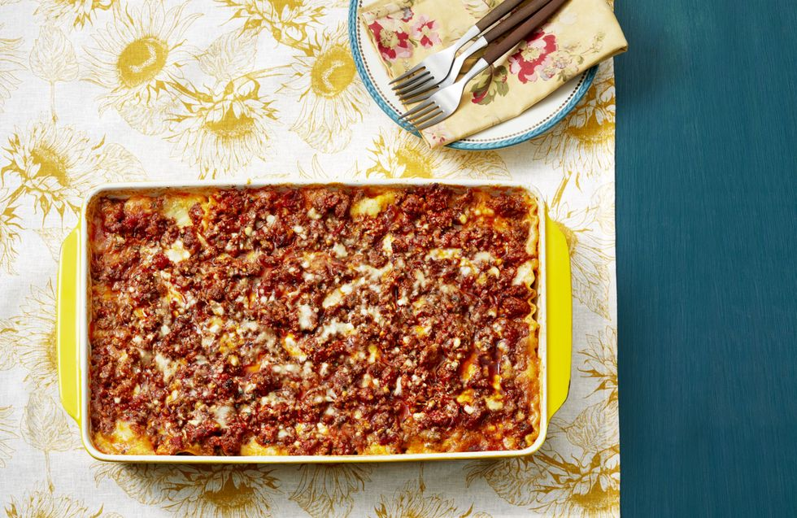

Lasagna recipe

Description
A classic recipe of one of the most loved foods in the world.
The ultimate comfort food = homemade lasagna. Family and friends gather around the dinner table at any time for this lasagna recipe. A big warm comforting hug within layers of pasta, tomato sauce, white sauce and melted cheese
My mama’s famous lasagna recipe is hands down the best lasagna I have ever had in my life.
She learnt her ways from her Italian friends when she lived in New York City, adjusting the recipe through the years to perfect it…and every single person that tries her recipe comes back for seconds, thirds and leftovers for the next day!
Ingredients
- Butter
- Flour
- Milk
- Parmesan cheese
Steps
-
Heat oil in a large pot over medium heat, then add in the onion and carrots and cook for 8-10 minutes, or until softened. Add in the garlic and sauté for about 1 minute, until fragrant.
- Add beef and pork (if using) and cook while breaking it up with the end of your spoon, until browned.
- Pour in the Passata, crushed tomatoes, tomato paste, crushed bouillon and dried herbs. Mix well to combine and bring to a gentle simmer. Season with desired amount of salt and pepper (I use about 3/4 teaspoon each) and sugar if needed. Cover and cook for about 20-30 minutes, occasionally mixing, until the sauce has thickened slightly and meat is tender.
- Adjust salt, pepper and dried herbs to your taste